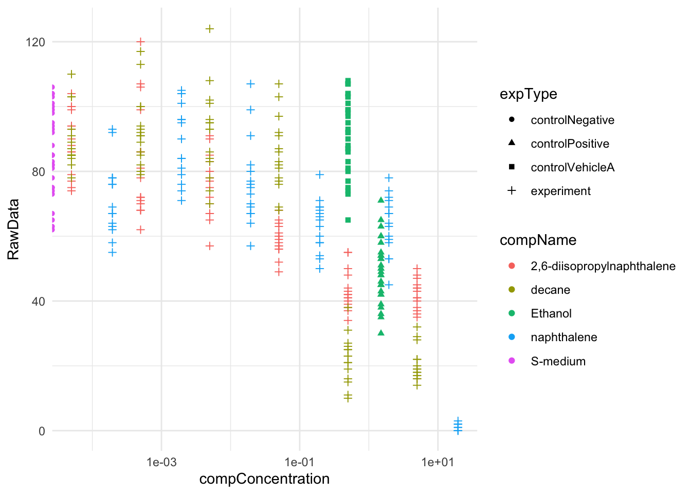
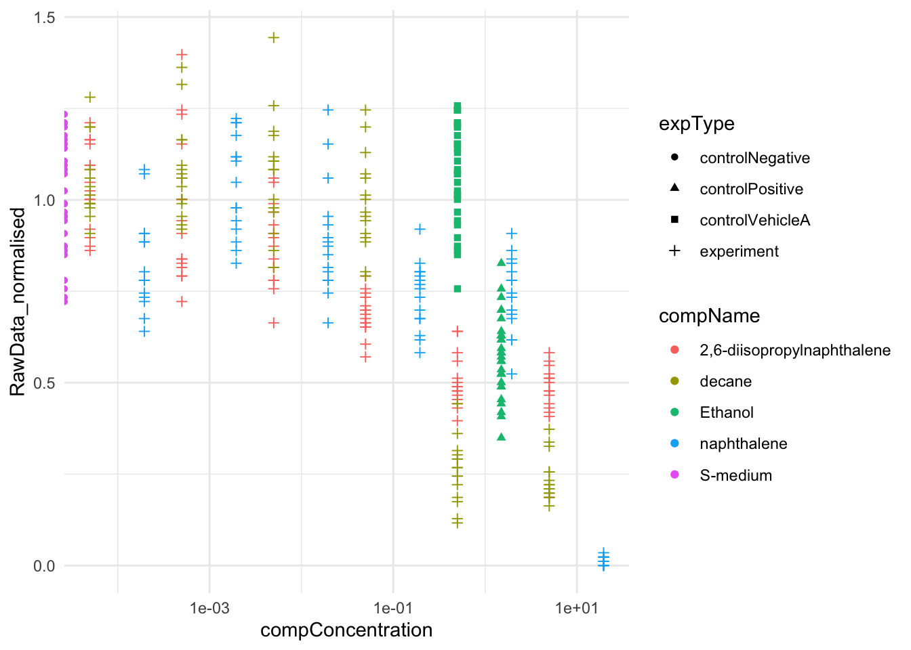

6 Peer review
In dit onderdeel van mijn portfolio onderzoek ik de reproduceerbaarheid van zowel experimentele data als gepubliceerde wetenschappelijke artikelen. Ik presenteer twee opdrachten waarin ik heb geoefend met het analyseren en beoordelen van wetenschappelijke data in R.
6.1 Data analyse van C. elegans blootstelling
Voor deze opdracht was het de bedoeling om de data van een collega laborant te analyseren, afkomstig van het HU lectoraat Innovative Testing in Life Sciences & Chemistry. De data is verkregen door C. elegans bloot te stellen aan verschillende concentraties van diverse chemicaliën. Het doel was om de analyse reproduceerbaar uit te werken in een RMarkdown bestand.
Inlezen van dataset in R
# data inlezen met behulp van readxl package
library(readxl)
data_ce_liq_flow_062 <- read_excel("~/dsfb2_2025_jm/dsfb2_workflows_portfolio_jm/raw_data/CE.LIQ.FLOW.062_Tidydata.xlsx")Controleren van datatype
# controle van datatype en of de data goed is ingelezen
typeof(data_ce_liq_flow_062$RawData) # double## [1] "double"## [1] "character"## [1] "character"De data types zijn als volgt:
- RawData = double
- compName = character
- compConcentration = character Op basis van de eerder gegeven informatie over de variabelen van de analyse zou ik de volgende aanpassingen maken:
- rawData = integer
- compConcentration = double De data is over het algemeen goed ingelezen, maar de datatypen hadden beter ingeladen kunnen worden. rawData en compConcentration hebben namelijk het verkeerde datatype.
Data type corrigeren
# data typen corrigeren
data_ce_liq_flow_062$RawData <- as.integer(data_ce_liq_flow_062$RawData)
data_ce_liq_flow_062$compConcentration <- as.double(data_ce_liq_flow_062$compConcentration)
# controle van datatype
typeof(data_ce_liq_flow_062$RawData) # integer## [1] "integer"## [1] "double"Scatterplot maken van data
library(ggplot2)
# scatterplot maken met de aangeleverde data
ggplot(data = data_ce_liq_flow_062, aes(x = compConcentration, y = RawData)) +
geom_point(aes(colour = compName, shape = expType)) +
scale_x_log10() +
geom_jitter(alpha = 0) +
theme_minimal()
Scatterplot maken met genormaliseerde data
library(dplyr)
# bepalen van gemiddelde van negatieve controle
mean_negative <- mean(data_ce_liq_flow_062$RawData[data_ce_liq_flow_062$expType == "controlNegative"], na.rm = TRUE)
# normaliseren van ruwe data met gemiddelde van negatieve controle
normaldata_ce_liq_flow_062 <- data_ce_liq_flow_062 |>
mutate(RawData_normalised = RawData / mean_negative)
# scatterplot maken met de genormaliseerde data
ggplot(data = normaldata_ce_liq_flow_062, aes(x = compConcentration, y = RawData_normalised)) +
geom_point(aes(colour = compName, shape = expType)) +
scale_x_log10() +
geom_jitter(alpha = 0) +
theme_minimal()
Analyse reflectie
Voor de analyse is de data ingelezen, geïnspecteerd en gevisualiseerd met scatterplots waarin de concentratie van het chemicalie en het aantal nakomelingen van C. elegans per chemicalie wordt weergegeven.
In dit experiment worden verschillende typen controles gebruikt:
controlNegative, oftewel de negatieve controle, is gedaan met S-medium. De negatieve controle is een soort referentiepunt voor de achtergrond van het aantal namekomelingen van C. elegans zonder de aanwezigheid van een chemicalie. De negatieve controle wordt gebruikt om niet specifieke reacties en ruis te identificeren. Hiermee kan je de ruwe data mee corrigeren.
controlPositive, oftewel de positieve controle, is gedaan met ethanol. De positieve controle is behandeling waarvan verwacht wordt dat deze een duidelijke, meetbare respons veroorzaakt. Hiermee kan er aangetoond worden dat C. elegans een respons heeft op de behandeling en instaat is om een respons te genereren en functioneert zoals we verwachten op deze controle.
controlVehicle, oftewel de vehicle controle, is ethanol. Dit is hetzelfde oplosmiddel als gebruikt in de experimentele chemicaliën en in de positieve controle. Deze controle controleert de eventuele effecten van het oplosmiddel en kunnen hierdoor worden onderscheiden van de effecten van de experimentele chemicaliën.
Nut van Normalisatie
Door alle meetwaarden uit te drukken als fractie van de gemiddelde negatieve controlewaarde, worden verschillen die veroorzaakt worden door ruis genormaliseerd. Dit zorgt voor een betere en betrouwbaardere data analyse.
De data is genormaliseerd ten opzichte van de negatieve controle om vergelijkbaarheid tussen condities te verbeteren. Ook hebben we een plan opgesteld voor een dose-response analyse met behulp van het drc package in R.
Stappenplan voor een dose-response analyse met drc package in R
1. Installeer en laad drc package. 2. Lees de data in en inspecteer de dataset.
3. Voorbereiden van dataset.
4. Visualiseren van ruwe data.
5. Kiezen van het model.
- Selecteer een geschikt dose-response model, bijvoorbeeld een 4-parameter log-logistisch model.
6. Model toepassen op de data.
7. Bepalen van de IC50-waarde.
8. Visualiseren van de dose-response curve.
9. Interpreteren van de resultaten. 6.2 Reproduceerbaarheid van wetenschappelijk onderzoek
In dit onderdeel van mijn portfolio beoordeel ik de reproduceerbaarheid van een zelf gekozen wetenschappelijk artikel, waarvan de R code beschikbaar is gesteld.
Introductie van onderzoek
Het artikel “Proteome-scale prediction of molecular mechanisms underlying dominant genetic diseases” van Badonyi en Marsh (2024) richt zich op het voorspellen van moleculaire mechanismen die ten grondslag liggen aan dominante genetische aandoeningen. Veel van deze aandoeningen worden veroorzaakt door mutaties die handelen via dominante negatieve (DN), gain-of-function (GOF) of loss-of-function (LOF) mechanismen. Het onderscheiden van deze mechanismen is belangrijk voor de ontwikkeling van gerichte therapieën.
De onderzoekers ontworpen een driedelig statistisch model, bestaande uit support vector machine (SVM) binary classifiers, om te voorspellen of menselijke eiwitcoderende genen geassocieerd worden met DN, GOF of LOF moleculaire ziekten mechanismen. Het model werd getest met behulp van bekende biologische en klinische eigenschappen die aan deze mechanismen zijn gekoppeld. De resultaten tonen aan dat het model goed kan omgaan met onbekende data en nuttige inzichten biedt in de functionele eigenschappen van eiwitten die betrokken zijn bij verschillende ziekteprocessen.
De onderzoeksvraag van dit onderzoek luidt als volgt:
- Hoe kunnen SVM binary classifiers worden ingezet om te voorspellen of menselijke eiwitcoderende genen betrokken zijn bij dominant-negatieve (DN), gain-of-function (GOF) of loss-of-function (LOF) moleculaire ziektemechanismen, en welke inzichten bieden deze voorspellingen in de functionele eigenschappen van eiwitten die een rol spelen bij verschillende ziekteprocessen?
6.2.1 Beoordeling van onderzoek op reproduceerbaarheid
Aan de hand van de volgende beoordelingscriteria zal ik beoordelen of het onderzoek reproduceerbaar is.
| Transparency Criteria | Definition | Response |
|---|---|---|
| Study Purpose | A concise statement in the introduction of the article, often in the last paragraph, that establishes the reason the research was conducted. Also called the study objective. | Yes |
| Data Availability Statement | A statement, in an individual section offset from the main body of text, that explains how or if one can access a study’s data. The title of the section may vary, but it must explicitly mention data; it is therefore distinct from a supplementary materials section. | Yes |
| Data Location | Where the article’s data can be accessed, either raw or processed. | Open Science Framework |
| Study Location | Author has stated in the methods section where the study took place or the data’s country/region of origin. | Yes; United Kingdom |
| Author Review | The professionalism of the contact information that the author has provided in the manuscript. | Correspondence address |
| Ethics Statement | A statement within the manuscript indicating any ethical concerns, including the presence of sensitive data. | Not present |
| Funding Statement | A statement within the manuscript indicating whether or not the authors received funding for their research. | Yes |
| Code Availability | Authors have shared access to the most updated code that they used in their study, including code used for analysis. | Yes (Open Science Framework) |
Aangezien er 7 van de 8 criteria afgevinkt kunnen worden, kan er gesteld worden dat dit onderzoek reproduceerbaar is.
6.2.2 Zelf de code reproduceren
Bekijk de R code en beschrijf in je eigen woorden wat de R code doet. Beoordeel de leesbaarheid met een cijfer van 1 (= erg slecht) tot 5 (= erg goed).
De code is relatief overzichtelijk, met een duidelijke opbouw per plot. In het begin wordt duidelijk uitgelegd wat de functie van de geschreven functies is, die later over de gehele code gebruikt zullen worden. Er is een goede structuur, maar de headers hadden informatiever kunnen zijn. Op een oogopslag zou ik de R code nu een 4 geven.
Download de R code en data en maak een nieuw R project aan om de analyse te herhalen. Probeer minstens 1 figuur te reproduceren. Als je hierbij tegen errors aanloopt, probeer die dan te verbeteren en houd die verbeteringen bij. Beoordeel hierna de reproduceerbaarheid van de R code met een cijfer van 1 (= erg slecht) tot 5 (= erg goed).
# setup
library(rstatix) # https://rpkgs.datanovia.com/rstatix/
library(tidyverse) # https://www.tidyverse.org/
library(tidymodels) # https://www.tidymodels.org/
library(scales) # https://scales.r-lib.org/
library(patchwork) # https://patchwork.data-imaginist.com/# functies opstellen voor analyse
no_zero_trail <- function(x) ifelse(x == 0, '0', x)
optimal_threshold <- function(base_data) {
# Determines the optimal threshold from threshold data.
# Custom to this particular project.
#
# Args:
# base_data (tibble): one of 'dn_thresholds', 'gof_thresholds', or
# 'lof_thresholds'
#
# Returns:
# A single numeric representing the threshold of lowest distance.
base_data |>
filter(.metric %in% c('sensitivity', 'specificity')) |>
pivot_wider(names_from = .metric, values_from = .estimate) |>
mutate(distance = sqrt((1 - sensitivity) ^ 2 + (1 - specificity) ^ 2)) |>
arrange(distance) |>
slice(1) |>
pull(.threshold)
}
run_estimate <- function(base_data, primary, metric_func) {
# Wrapper for bootstraps() and yardstick threshold-dependent estimators.
# Custom to this particular project.
#
# Args:
# base_data (tibble): a test data table with columns gene, class, .pred_*
# primary (character): one of 'dn', 'gof', 'lof'
# metric_func: a yardstick function, such as sensitivity()
#
# Returns:
# A tibble containing 90% boostrap confidence intervals for the metric.
set.seed(2024)
t <- filter(thresholds, class == {{ primary }})$t
secondary <- case_when(primary == 'dn' ~ 'lof',
primary == 'gof' ~ 'lof',
primary == 'lof' ~ 'non_lof')
base_data |>
rename(.pred_primary = str_c('.pred_', primary)) |>
mutate(.pred_class = if_else(.pred_primary > t, primary, secondary),
.pred_class = factor(.pred_class, levels = c(primary, secondary))) |>
bootstraps(strata = class, times = 1000, apparent = TRUE) |>
mutate(result = map(
splits,
.progress = TRUE,
.f = function(split, ...) {
analysis(split) |>
metric_func(class, .pred_class) |>
select(term = .metric, estimate = .estimate)
}
)) |>
int_pctl(statistics = result, alpha = 0.1) |>
mutate(class = primary) |>
mutate_if(is.double, round, 3)
}
sens50 <- function(threshold_data, class) {
# function to map out threshold at which 50% sensitivity is reached.
#
# args:
# threshold_data (tibble): a table containing columns .threshold,
# .metric, .estimator, and .estimate
# class (character): one of 'dn', 'gof', 'lof'
#
# returns:
# a single-row tibble with the threshold value t (and other metrics).
t <- threshold_data |>
filter(.metric == 'sensitivity', .estimate >= 0.5) |>
filter(.estimate == min(.estimate)) |>
head(1) |>
pull(.threshold)
threshold_data |>
filter(.threshold == t) |>
pivot_wider(names_from = .metric, values_from = .estimate) |>
mutate(class = class) |>
select(class, t = .threshold, accuracy, specificity,
sensitivity, npv, ppv, j_index)
}
ci_paster <- function(estimate, lower, upper) {
# Helper to paste confidence intervals.
#
# Args:
# estimate (numeric): a point estimate
# lower (numeric): lower confidence interval
# upper (numeric): upper confidence interval
#
# Returns:
# A character formatted in this style: "1.0 [0.95, 1.5]"
str_c(estimate, ' [', lower, ',', upper, ']')
}# test data
dn_test <- read_tsv('~/dsfb2_2025_jm/dsfb2_workflows_portfolio_jm/repro_opdracht/analysis/test_set/dn_test_pred.tsv', col_types = 'cfnn')
gof_test <- read_tsv('~/dsfb2_2025_jm/dsfb2_workflows_portfolio_jm/repro_opdracht/analysis/test_set/gof_test_pred.tsv', col_types = 'cfnn')
lof_test <- read_tsv('~/dsfb2_2025_jm/dsfb2_workflows_portfolio_jm/repro_opdracht/analysis/test_set/lof_test_pred.tsv', col_types = 'cfnn')
# inlezen van threshold data
dn_thresholds <- read_tsv('~/dsfb2_2025_jm/dsfb2_workflows_portfolio_jm/repro_opdracht/analysis/thresholds/dn_thresholds.tsv')
gof_thresholds <- read_tsv('~/dsfb2_2025_jm/dsfb2_workflows_portfolio_jm/repro_opdracht/analysis/thresholds/gof_thresholds.tsv')
lof_thresholds <- read_tsv('~/dsfb2_2025_jm/dsfb2_workflows_portfolio_jm/repro_opdracht/analysis/thresholds/lof_thresholds.tsv')# thresholds at which 50% sensitivity is reached on the test sets
thresholds <- bind_rows(
sens50(dn_thresholds, class = 'dn'),
sens50(gof_thresholds, class = 'gof'),
sens50(lof_thresholds, class = 'lof')
)
# assign thresholds to variables
pdn_threshold <- thresholds$t[1]
pgof_threshold <- thresholds$t[2]
plof_threshold <- thresholds$t[3]
# run metrics of interest
metric_tbl <- bind_rows(
# sensitivity
run_estimate(dn_test, primary = 'dn', sensitivity),
run_estimate(gof_test, primary = 'gof', sensitivity),
run_estimate(lof_test, primary = 'lof', sensitivity),
# specificity
run_estimate(dn_test, primary = 'dn', specificity),
run_estimate(gof_test, primary = 'gof', specificity),
run_estimate(lof_test, primary = 'lof', specificity),
# Matthews correlation coefficient
run_estimate(dn_test, primary = 'dn', mcc),
run_estimate(gof_test, primary = 'gof', mcc),
run_estimate(lof_test, primary = 'lof', mcc),
# F1 score
run_estimate(dn_test, primary = 'dn', f_meas),
run_estimate(gof_test, primary = 'gof', f_meas),
run_estimate(lof_test, primary = 'lof', f_meas),
# accuracy
run_estimate(dn_test, primary = 'dn', accuracy),
run_estimate(gof_test, primary = 'gof', accuracy),
run_estimate(lof_test, primary = 'lof', accuracy)
)# tabel met data om threshold te plotten
metric_tbl |>
pivot_wider(names_from = term, values_from = where(is.numeric)) |>
transmute(
class = class,
sensitivity = ci_paster(
.estimate_sensitivity,
.lower_sensitivity,
.upper_sensitivity
),
specificity = ci_paster(
.estimate_specificity,
.lower_specificity,
.upper_specificity
),
accuracy = ci_paster(.estimate_accuracy, .lower_accuracy, .upper_accuracy),
mcc = ci_paster(.estimate_mcc, .lower_mcc, .upper_mcc),
f1 = ci_paster(.estimate_f_meas, .lower_f_meas, .upper_f_meas)
) ## # A tibble: 3 × 6
## class sensitivity specificity accuracy mcc f1
## <chr> <chr> <chr> <chr> <chr> <chr>
## 1 dn 0.519 [0.448,0.584] 0.778 [0.717,0.841] 0.642 [0.592,0.693] 0.306… 0.60…
## 2 gof 0.519 [0.45,0.592] 0.818 [0.759,0.879] 0.666 [0.619,0.712] 0.353… 0.61…
## 3 lof 0.519 [0.451,0.588] 0.815 [0.764,0.871] 0.66 [0.618,0.703] 0.348… 0.61…# threshold plots
dn_thr <-
ggplot(dn_thresholds, aes(.threshold, .estimate, colour = .metric)) +
geom_line(linewidth = 0.5, show.legend = TRUE) +
scale_colour_viridis_d() +
geom_vline(xintercept = pdn_threshold, colour = 'red') +
geom_vline(xintercept = optimal_threshold(dn_thresholds), linetype = 2) +
scale_y_continuous(labels = no_zero_trail) +
scale_x_continuous(labels = no_zero_trail) +
theme(
legend.position = 'top',
legend.direction = 'horizontal',
legend.justification = 'left',
legend.background = element_blank()
) +
labs(x = 'pDN threshold', y = 'Metric estimate', colour = NULL)
gof_thr <-
ggplot(gof_thresholds, aes(.threshold, .estimate, colour = .metric)) +
geom_line(linewidth = 0.5, show.legend = FALSE) +
scale_colour_viridis_d() +
geom_vline(xintercept = pgof_threshold, colour = 'red') +
geom_vline(xintercept = optimal_threshold(gof_thresholds), linetype = 2) +
scale_y_continuous(labels = no_zero_trail) +
scale_x_continuous(labels = no_zero_trail) +
theme(
legend.position = 'top',
legend.direction = 'horizontal',
legend.justification = 'left',
legend.background = element_blank()
) +
labs(x = 'pGOF threshold', y = 'Metric estimate', colour = NULL)
lof_thr <-
ggplot(lof_thresholds, aes(.threshold, .estimate, colour = .metric)) +
geom_line(linewidth = 0.5, show.legend = FALSE) +
scale_colour_viridis_d() +
geom_vline(xintercept = plof_threshold, colour = 'red') +
geom_vline(xintercept = optimal_threshold(lof_thresholds), linetype = 2) +
scale_y_continuous(labels = no_zero_trail) +
scale_x_continuous(labels = no_zero_trail) +
theme(
legend.position = 'top',
legend.direction = 'horizontal',
legend.justification = 'left',
legend.background = element_blank()
) +
labs(x = 'pLOF threshold', y = 'Metric estimate', colour = NULL)
dn_thr / gof_thr / lof_thr
Allereerst heb ik bij de setup de regel setwd('path_to_OSF_storage/analysis') verwijderd. Er traden veel fouten op bij de pathways, dit kwam doordat de pathways eerst aangepast moesten worden naar mijn eigen paden. Zodra deze correct waren aangepast, ondervond ik geen problemen meer.
Het was best zoeken naar de data en de functies binnen 1 analyse, in dit geval een threshold analyse. Naar mijn mening zou het handiger zijn om het per analyse te rangschikken, zodat iemand die het script wil reproduceren niet het volledige script hoeft uit te voeren. Het was namelijk behoorlijk lastig om alle benodigde data voor een specifieke analyse te filteren. Daarom lijkt het mij praktischer om per analyse te werken. Daarom lijkt het mij praktischer om per analyse te werken. Dit gebeurt nu al in zekere mate, maar dan zou ik aanraden om verplichte chunks in te stellen die eerst uitgevoerd moeten worden voordat een analyse start.
De legenda ontbrak, maar is nu aanwezig doordat ik show.legend in geom_line heb aangepast. Hierdoor verschenen echter niet alle lijnen in de legenda. Ik heb geen idee hoe ik dit probleem had kunnen oplossen. Wat dat betreft vond ik het RMarkdown bestand vrij onoverzichtelijk. Voor de volledige reproduceerbaarheid geef ik het bestand een 3.
6.2.3 Referentie
Artikel
Badonyi M, Marsh JA (2024) Proteome-scale prediction of molecular mechanisms underlying dominant genetic diseases. PLoS ONE 19(8): e0307312. https://doi.org/10.1371/journal.pone.0307312.